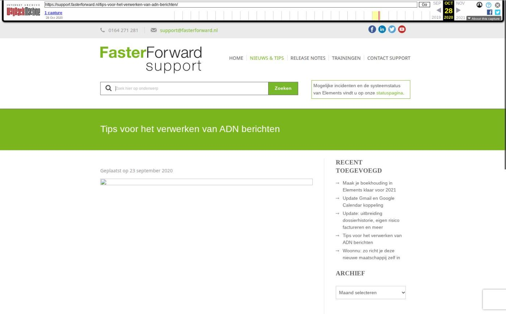

Stukken beoordelen, koppeling Voogd & Voogd en meer
Op dinsdag 7 januari zijn Elements en eBlinqx weer verbeterd en uitgebreid met nieuwe features. Deze release bevat onder andere een verbetering van stukken beoordelen en de koppeling met Voogd & Voogd. Ook zijn er nieuwe features alleen voor eBlinqx, bijvoorbeeld check geldigheid document en document voor gezien aanmerken. Vanaf nu zal er in de releasenotes een onderscheid gemaakt worden tussen eBlinqx Only features en uitbreidingen die voor zowel Elements als eBlinqx gelden.
- eBlinqx Only
- Check geldigheid document
- Document voor gezien aanmerken
- Product koppelen aan dienst
- Elements en eBlinqx
- Stukken beoordelen verbeterd
- Gemakkelijk verzekeringen vergelijken met Voogd & Voogd
- Verbeteringen Uwkluis
- Meer zakelijke gegevens in Uwkluis
- Synchronisatie levens- en spaarverzekering naar Portefeuillesignalen
- Nieuwe dekkingen volgens SIVI update
- Overige verbeterpunten
- eBlinqx Only
- Check geldigheid document
Let op: alleen beschikbaar in eBlinqx
Vanaf nu kan je aangeven of documenten met een geldigheidsdatum, bijvoorbeeld kopie ID kaart, automatisch gecontroleerd moeten worden bij het uploaden in Uwkluis. Ligt de datum in het verleden of de nabije toekomst dan verschijnt er een melding om de klant hierop te attenderen. In Soort Documenten Beheer geef je aan welke documenten je automatisch wilt laten controleren. Voor nu wordt dit alleen toepast op het type identiteitsbewijs. In de toekomst wordt dit mogelijk voor andere soort documenten.
Bij het controleren van het identiteitsbewijs in Uwkluis worden ook de gegevens op de identiteitsbewijs gecontroleerd met de gegevens die in eBlinqx staan. Als hier een verschil in zit dan verschijnt er op de startpagina en in het betreffende stuk een melding met daarbij een verwijzing waar je het verschil kunt bekijken en verwerken. Dit is in het tabblad Mutaties.
Let op: het controleren van de geldigheid van het document geldt alleen voor stukken die na de release zijn aangemaakt.
Document voor gezien aanmerken
Let op: alleen beschikbaar in eBlinqx
Een identiteitsbewijs moet niet alleen aangeleverd worden door de klant, het moet ook daadwerkelijk gezien zijn door de adviseur. Om dit gemakkelijk vorm te geven kan je nu met één knop automatisch het document tekenen voor gezien. De knop 'Document tekenen voor gezien' komt zichtbaar als je het stuk bewerkt. Op het document komt dan de naam van de adviseur, handtekening, kantoorlogo en een datum te staan. De adviseur kan zijn handtekening opslaan onder 'Mijn Instellingen'. Het logo kan een beheerder instellen in Beheer – Organisatie & Personen – betreffende kantoor – tabblad Huisstijl.
Product koppelen aan dienst
Let op: alleen beschikbaar in eBlinqx
Vanaf nu is het mogelijk in eBlinqx om een product te koppelen aan de dienst. Op deze manier maak je het inzichtelijk welk product precies bij de dienst hoort. Indien gewenst kan je workflows hierop laten reageren. In een latere release passen we ook bepaalde rapportages, bijvoorbeeld de pijplijnrapportage, hierop aan. Het koppelen is alleen mogelijk vanuit de dienst en geldt voor niet gearchiveerde producten. Het is niet mogelijk om twee diensten aan elkaar te koppelen. In het gekoppelde product zie je terug of deze wel of niet is gekoppeld aan de dienst.
- Elements en eBlinqx
- Stukken beoordelen verbeterd
Het scherm waarin je stukken beoordeeld is uitgebreid en visueel verbeterd. Zo kan je gemakkelijk via knoppen het stuk goedkeuren of afkeuren. Daarnaast zie je in de historie van het stuk wanneer het document is aangeleverd en door wie het stuk is goed- of afgekeurd. Ook is het mogelijk om een gerelateerd document naast het stuk te zetten, zodat je de informatie gemakkelijk met elkaar kunt vergelijken. Let op: het is niet meer mogelijk om via het wijzigingsicoon het stuk intern te beoordelen. Hiervoor moet je in de kolom 'Beoordeling intern' op 'Nog te beoordelen' klikken om onderstaand scherm te kunnen zien. Hier lees je er meer over.
Daarnaast zijn er visuele aanpassingen gedaan in de stukkenlijst. Door middel van kleur en kopjes wordt duidelijk of het stuk volledig gereed is of dat er nog openstaande acties zijn, bijvoorbeeld intern beoordelen of aan te leveren.
- Stukkenlijst voor release
- Stukkenlijst na release
Gemakkelijk verzekeringen vergelijken met Voogd & Voogd
Vanaf nu is het mogelijk om vanuit Elements en eBlinqx gemakkelijk het vergelijken van verzekeringen op te starten in Voogd en Voogd. Je kiest welke adresgegevens je wilt exporteren. Deze adresgegevens worden overgezet, waardoor je direct met de klantgegevens de vergelijking kan starten. Ook is het mogelijk om vanuit Elements en eBlinqx naar een bestaande klant in Voogd en Voogd te gaan. De afgesloten verzekering komt uiteindelijk via Aplaza terug in Elements en eBlinqx. Na het verwerken van het Aplaza-bericht komt het product in het klantdossier te staan. Lees hier meer over de koppeling met Voogd & Voogd.
Wil je gebruik maken van de koppeling? Stuur dan een e-mail naar support@fasterforward.
- Verbeteringen Uwkluis
- Meer zakelijke gegevens in Uwkluis
Naast het KvKnummer worden nu ook het correspondentieadres en zakelijke e-mailadres en telefoonnummer van een organisatie getoond in Uwkluis.
Synchronisatie levens- en spaarverzekering naar Portefeuillesignalen
In productcodesonderhoud kan je nu voor levensverzekeringen en het product vermogen & bancair per categorie aangeven of deze en als welk type gesynchroniseerd moeten worden naar Portefeuillesignalen. Zo kan je bijvoorbeeld bij een levensverzekering aangeven dat het als levensverzekering gemengd gesynchroniseerd moet worden.
Nieuwe dekkingen volgens SIVI update
Als via ADN en Aplaza berichten binnenkomen, worden de nieuwste, bijbehorende dekkingen en/of soorten documenten aangemaakt. Deze zijn namelijk uitgebreid volgens de SIVI richtlijnen. Hiermee zijn alle te selecteren verzekeringen up-to-date om correct te verwerken in een klantdossier.
- Nieuwe dekkingen
- 5803 Bedrijfsschade alle gevaren
- 5971 Huurdersbelang uitgebreid
- 5972 Huurdersbelang alle gevaren
Overige verbeterpunten
De rapportage CRM – dossiers met organisaties is uitgebreid met de kolommen 'Algemeen emailadres tweede contactpersoon', 'Contactpersoon functies' en 'Tweede contactpersoon functies'. De rapportage CRM – Verzekeringsportefeuille is uitgebreid met de kolom 'Handmatig prolongeren Ja/Nee'. Aan de rapportage CRM – Overzicht Hypotheken uitgebreid zijn de kolommen 'Onderpand huisnummer' en 'Onderpand huisnummer toevoeging' toegevoegd. Wil je deze kolommen zien, zet ze dan aan in Rapportagebeheer
Wij hebben diverse verbeteringen voor onze interne conversietool doorgevoerd. Hierdoor wordt de doorstroom van de conversies verbeterd
De inlogaccounts van medewerkers Blinqx kunnen we nu toegang geven tot specifieke omgevingen en mogelijkheden. Zo wordt de toegang afhankelijk van de werkzaamheden van de medewerker
Als er in een dossier een persoon of organisatie wordt toegevoegd of verwijderd dan wordt de dossieromschrijving automatisch aangepast aan de hand van een setting. Op deze manier hoef je na de wijziging de dossieromschrijving niet meer handmatig aan te passen
- Laatste 5 releasenotes
- Voorbereidingen op HDN 26 en verbeteringen PortefeuilleSignalen »
- Nog meer data en documenten vergelijken »
- Gemakkelijk data en documenten vergelijken »
- Verbeteringen boekhouding en facturatie »
- Verbeteringen gespreksopname en onder de motorkap »
Afbeeldingen bij dit artikel


Schermafbeelding van de oorspronkelijke pagina

Bron: Wayback Machine-archief